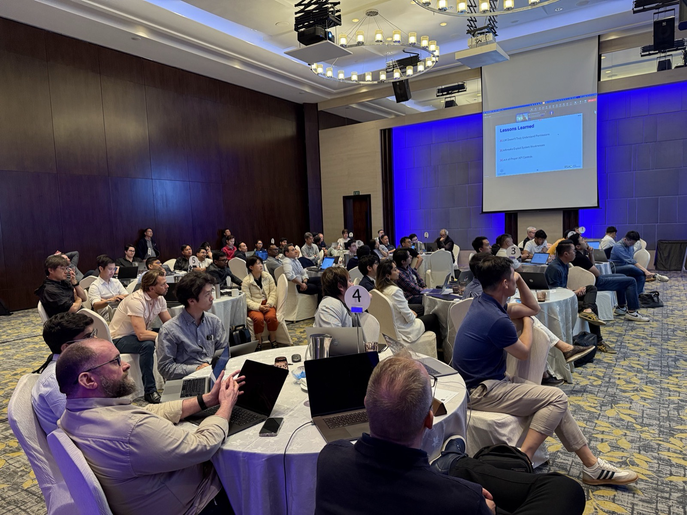

Break time activity · Govern what you built
No terminal for this one. You have built an agent that reads files, runs commands and calls tools from an MCP server. So has everyone else in this room. Three questions follow. Answer them for yourself. You will not get far.
Three questions to answer for yourself. Read them, and work out what you would say. The point is not the answer. It is how quickly you run out of one.
Count the agents in this room
There are about sixty laptops here. Every one of them has started an agent in the last hour. Answer these four:
Nobody set a control before any of this started. No inventory was kept, no identity was issued, and nothing was told to record what ran. So the answer is not hard to find. It was never written down.
💡 This is agent discovery. The first control any customer needs is a list of the agents they are running. Most organisations cannot produce one, and they are adding agents faster than they are adding inventory.
Jailbreaking LLM
Many of you already know how to talk a model past its own rules.

That was last year. This year the same ground was covered at the AI Agentic workshops at TechSummit26, and again at the channel partner events. Jailbreaking is not specialist knowledge any more. It is in this room, and it is in your customers' rooms.
The rules an agent is given are text. Text can be argued with. A control that has to hold cannot be a sentence.
Could you stop one?
Assume one agent in this room is doing something it should not. Reading a colleague's files, exfiltrating a key, calling a paid API in a loop. Answer these three:
🚨 The honest answer. Nobody can answer any of those three. Not because the people are careless. Because no control was enforced before the agents started. Discovery, authorisation and audit have to be in place before the question is asked. Asked afterwards, there is nothing to read and nothing to switch off.
That is the whole argument you take to a customer. It is not that AI agents are dangerous. It is that an agent nobody registered, holding an identity nobody issued, doing work nobody logged, cannot be governed at all.
Optional: ARKX Workshop
The reference materials below require a corporate Google login to view. If you are unable to access them, no worries at all! They are strictly optional and not required for today's workshop.
Two questions. Pick an answer to see why it is right or wrong.
How many AI agents ran in this room in the last hour?
A reasonable guess, and a guess. Some people ran the lesson twice and some not at all. Try again.
True, and still a guess. Your own subagent is in your log. The other fifty-nine are in nobody's. Try again.
✅ Correct. Sixty local log files are not an inventory. Discovery is a control you switch on beforehand, not a number you reconstruct afterwards.
One agent here starts exfiltrating a key. What stops it?
You spent Lesson 05 watching a rule be argued with. A prompt is a request. Try again.
✅ Correct. Enforcement has to be in the path of the call, and it has to be there first. After the fact there is nothing to stop and often nothing to read.
A log tells you afterwards. It refuses nothing. Worth having, and not a kill switch. Try again.
This lesson had no answer of its own. This is the answer.
Idira Secure AI Agents is built for the three questions you just failed to answer:
Read the product page at paloaltonetworks.com/idira/agentic. Part 2 puts you in front of it: Lesson 10 connects an agent through the AI Agent Identity Broker and calls a tool with credentials it never holds.
Two more pages for after the workshop. Both need a sign-in.
🧨 The risk you just saw. Sixty agents ran in this room, and nobody can say how many there were, whose they were, or what they did.
What answers it
🗣️ “You cannot govern agents you cannot list. Discovery, identity and audit go in before the first agent runs, not after.”
🎓 You now know how an AI harness is built. Five lessons, five short scripts, no magic left in the box:
in= only
ever goes up.Every AI agent platform you will be asked about is this, plus engineering.
🚀 Now for the practical half. Part 2 puts you in front of a
real harness, Claude Code, which has all seven components you just built:
CLAUDE.md for rules, skills, output styles, MCP servers, an LSP, subagents, hooks and
memory. You are not about to learn a new tool. You are about to recognise one.
And it points that harness at Idira problems: finding secrets in a repository, standing up zero standing privileges, removing a hardcoded key, and the Identity Broker. The permission prompts you will click through are Lesson 05's controls in a nicer coat.
Lesson 07 starts by waking up your agent. Same terminal, same credentials. See you there.